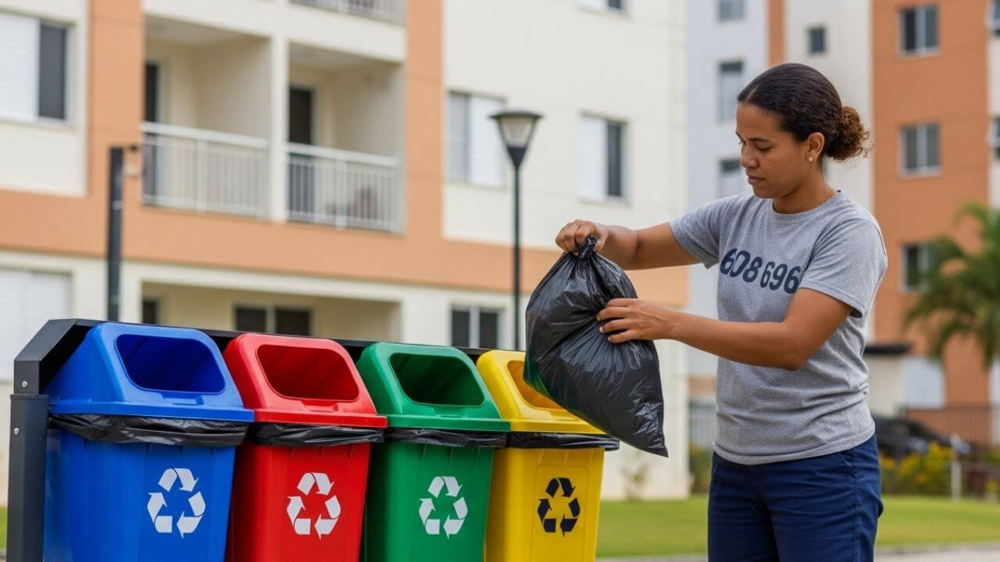
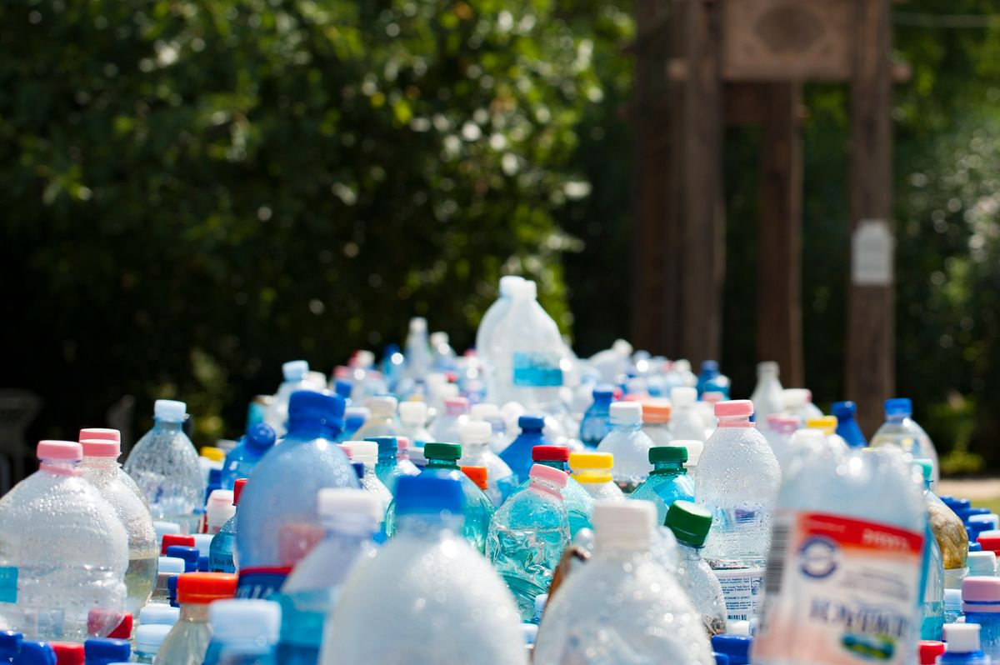
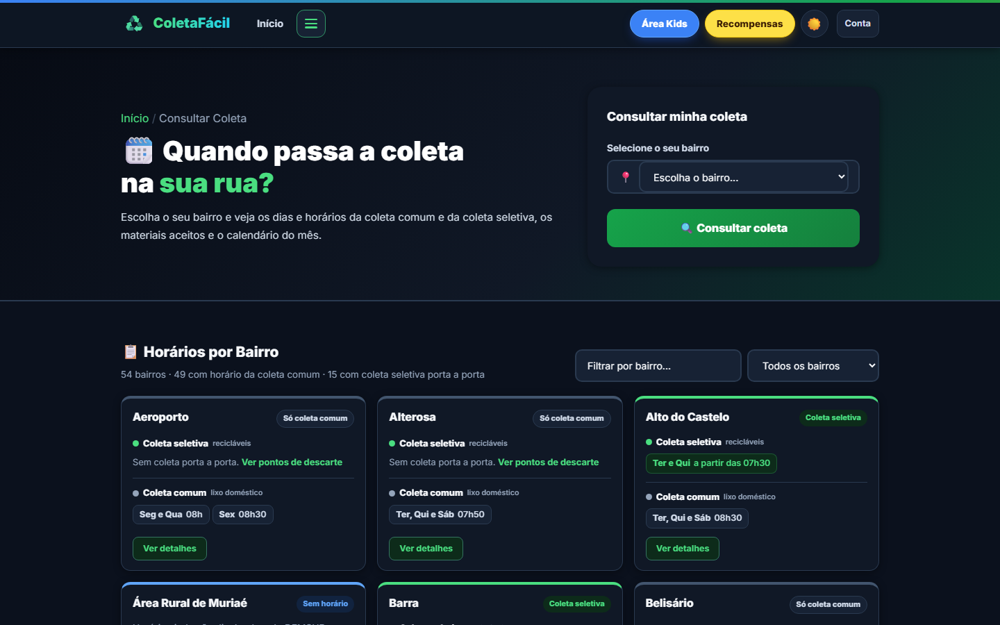
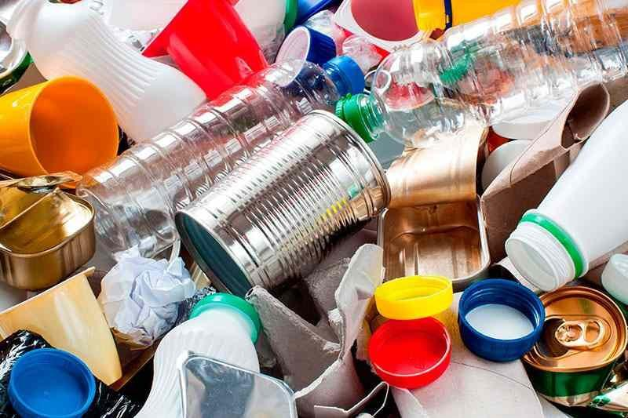

Apresentação acadêmica • 10 minutos
ColetaFácil
Informação, educação ambiental e participação cidadã para a coleta de resíduos em Muriaé–MG.
Problema → solução → funcionamento → tecnologia → limites

Apresentação acadêmica • 10 minutos
Informação, educação ambiental e participação cidadã para a coleta de resíduos em Muriaé–MG.
Problema → solução → funcionamento → tecnologia → limites
O problema

A proposta
Coleta comum e seletiva por bairro, dia, horário e trecho.
Mapa de pontos de descarte e filtros por material aceito.
Ocorrências com endereço, GPS, foto, protocolo e acompanhamento.
Painel administrativo para triagem, conteúdo e indicadores.
Jornada do morador
Seleciona o bairro e vê coleta comum, seletiva e calendário.
Confere materiais aceitos, preparo seguro e descarte alternativo.
Encontra no mapa um ponto que aceite o material especial.
Registra descarte irregular ou falha na coleta, com foto opcional.
Usa o protocolo para ver status, histórico e resposta da equipe.
Consulta informações, sugere ponto e pode registrar ocorrência anônima.
Vê suas ocorrências, participa dos pontos/recompensas e salva perfis Kids.
Fluxo de ocorrências
Registro anônimo descarta vínculo e contatos; coordenadas não aparecem como texto público; descrição completa volta apenas ao autor autenticado.
10 pts ao registrar (até 3/dia), +40 após confirmação/resolução e +15 pela foto aprovada. Máximo: 65 pts.
Contexto local

Educação e engajamento
Explica o que é aceito, como limpar e preparar, riscos e alternativas para resíduos especiais.
Prevenção
Jogos, quizzes e perfis infantis aproximam a educação ambiental das famílias.
Aprendizado
Reconhece ocorrências confirmadas; resgates verificam saldo e estoque antes de gerar o código.
Participação

Painel administrativo
Abas Em aberto, Resolvidas e Arquivadas; fotos, descrição, status e observação.
Cadastro e edição de materiais, pontos de descarte e coleta seletiva.
Totais por status, tipo e bairro, calculados com os dados do banco.
Locais sugeridos pela comunidade entram como novos e podem ser aprovados ou recusados.
Cada mudança de ocorrência entra no histórico com data e responsável.
As rotas do painel exigem usuário autenticado do tipo Administrador.
Como funciona tecnicamente
HTML, CSS e JavaScript
Front Controller → Controller → Model → View
Tabelas normalizadas, chaves estrangeiras, índices, histórico de status e livro-razão de pontos.
Conclusão
Obrigado. Perguntas?
Apêndice de preparação • não precisa projetar
Apêndice de preparação
Organiza o sistema em tela (View), regras (Controller) e dados (Model).
O arquivo index.php recebe as rotas e direciona cada pedido à função certa.
Formato usado pelo navegador para pedir dados sem recarregar toda a página.
MySQL separa usuários, bairros, coletas, ocorrências e relações, preservando consistência.
Camada do PHP para acessar o banco com parâmetros, reduzindo injeção de SQL.
Recursos de aplicativo web: instalação, manifesto e cache de arquivos para contingência.
Biblioteca e mapa aberto usados para visualizar pontos e ocorrências em Muriaé.
Autenticação confirma quem é o usuário; autorização decide se ele pode acessar o admin.
O saldo não é digitado diretamente: resulta da soma de créditos e débitos registrados.
Apêndice de preparação
Para dominar o fluxo completo sem esconder conceitos em um framework. Ainda assim, o código foi organizado em MVC para manter separação de responsabilidades.
O cronograma tem a página do DEMSUR como fonte declarada e foi carregado por migração. É uma fotografia estática; precisa de validação e atualização oficial.
Não. É um protótipo funcional executado localmente em WAMP, sem homologação ou uso institucional comprovado.
Cada ocorrência recebe protocolo. Mudanças de status e observações geram uma linha do tempo consultável.
O registro vale pouco e tem limite diário; a maior parte entra apenas quando um administrador confirma e resolve.
Há opção anônima, acesso restrito às fotos, minimização de dados públicos e tentativa de remover metadados. Isso não equivale a uma auditoria LGPD completa.
Unir agenda de coleta, educação, mapa, ocorrência com protocolo e painel administrativo num sistema contextualizado para Muriaé.
Validação com DEMSUR e moradores, dados realmente institucionais, testes automatizados, reforço de segurança, implantação e medição de uso.
Apêndice de preparação
Apêndice de preparação
DEMSUR — Cronograma de Coleta:
https://www.demsur.com.br/pagina/107/cronograma-coleta
OpenStreetMap — limites de Muriaé:
Relação 315428, referenciada em app/config/Config.php.
Observação: a lista de bairros foi fornecida pela equipe do projeto e deve ser validada institucionalmente antes de uso público.
HANDOFF.md — visão geral e arquitetura.
modelo/modeloColetaFacil.sql — esquema físico.
modelo/migration_06_cronograma_demsur.sql — carga do cronograma.
app/controller/Ocorrencia.php — fluxo de registro, consulta e privacidade.
app/model/PontosModel.php — regras de pontuação.
app/controller/Admin.php — gestão administrativa.